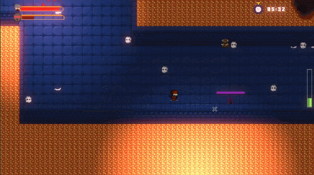

Demond Destroyer
Informacion del Proyecto
- Rol→ Programador
- N° de Integrantes→ 3
- Tiempo→ 4 meses
- Motor→ Unity
- Niveles→ 2
Herramientas Usadas
- Unity

- C#

- Aseprite

- GitHub

Acerca del Proyecto
Proyecto 2D Top Down shooter ,desarrollado en Unity, donde controlas a un ninja atrapado en un castillo lleno de demonios. Tu objetivo es derrotarlos a todos y encontrar la salida para escapar del castillo en un tiempo determinado.
Lo que realicé
Dentro de este proyecto participé principalmente en el área de programación utilizando Unity, desarrollando las mecánicas principales del videojuego y diferentes sistemas relacionados al gameplay. Entre mis responsabilidades estuvieron la implementación del control del jugador, el comportamiento de enemigos, UI y la integración de animaciones y escenarios. El proyecto fue realizado en un equipo de tres integrantes, donde asumí el rol principal de Gameplay Programmer, mientras que el resto del equipo se enfocó en el apartado visual y artístico. Además, colaboramos conjuntamente en distintas decisiones relacionadas al diseño y estructura general del juego.
Sistema de Player
Desarrollo del movimiento del jugador.
Implementación de sistema de disparo (shuriken).
Sistema de Enemigos
Implementación del movimiento y persecución mediante Pathfinding.
Comportamientos diferenciados por tipo de enemigo :
Enemigo volador→ Ataque a distancia.
Enemigo bomba→ Al colisionar explota.
Sistema de items
Implementé un sistema de recolección de ítems con distintas funciones :
Item Escudo→ Protección contra daño.
Paralización→ Detiene acciones enemigas.
Sistema de items

Escudo
Al recoger el Ítem, otorga protección al jugador. Tiene uso limitado de consumo, por lo que debe activarse estratégicamente

Paralización
Al derrotar enemigos, el jugador acumula energía que se refleja en una barra de habilidad. Una vez que la barra se completa, puede activar el poder de paralización para detener temporalmente a todos los enemigos, permitiéndole aprovechar la oportunidad para avanzar, atacar o superar situaciones de mayor dificultad.
Codificacion - Escudo
void Shield()
{
if (pause != null && pause.paused) return;
if (Input.GetKey(KeyCode.Space) && bottle > 0)
{
shieldActive.SetActive(true);
shield = true;
bottle -= 50 * Time.deltaTime / 13f;
shieldBar.GetComponent().UpdateSliderShield(bottle);
}
else if(Input.GetKeyUp(KeyCode.Space))
{
shieldActive.SetActive(false);
shield = false;
}
}
Codificacion - Botella de Paralizacion
//Activa el Paralizador
if (sliderPlayerLife.powerCurrent >= 200 && countParalizer > 0 && !activeParalyzer)
{
textMessageItem.SetActive(true);
activeParalyzer = true;
}
else if (countParalizer <= 0)
{
blade.gameObject.SetActive(true);
}
if (Input.GetKeyDown(KeyCode.H)&&activeParalyzer&&textMessageItem.activeSelf)
{
sliderPlayerLife.powerCurrent = 0;
sliderPlayerLife.UpdatePowerSlider();
countParalizer--;
textMessageItem.SetActive(false);
paralyzation.gameObject.SetActive(true);
InvokeRepeating(nameof(TimerBar), 0f, 0.02f);
}
public void TimerBar()
{
timerPower -= Time.deltaTime*DelayTimer;
timerStop.fillAmount = timerPower / MaxtimerPower;
if (timerPower <= 0)
{
activeParalyzer = false;
timerPower = 0;
paralyzation.gameObject.SetActive(false);
CancelInvoke(nameof(TimerBar));
}
}
public void UpdatePowerSlider()
{
powerCurrent = Mathf.Min(powerCurrent, powerMax);
sliderPowerUI.fillAmount = powerCurrent / powerMax;
}